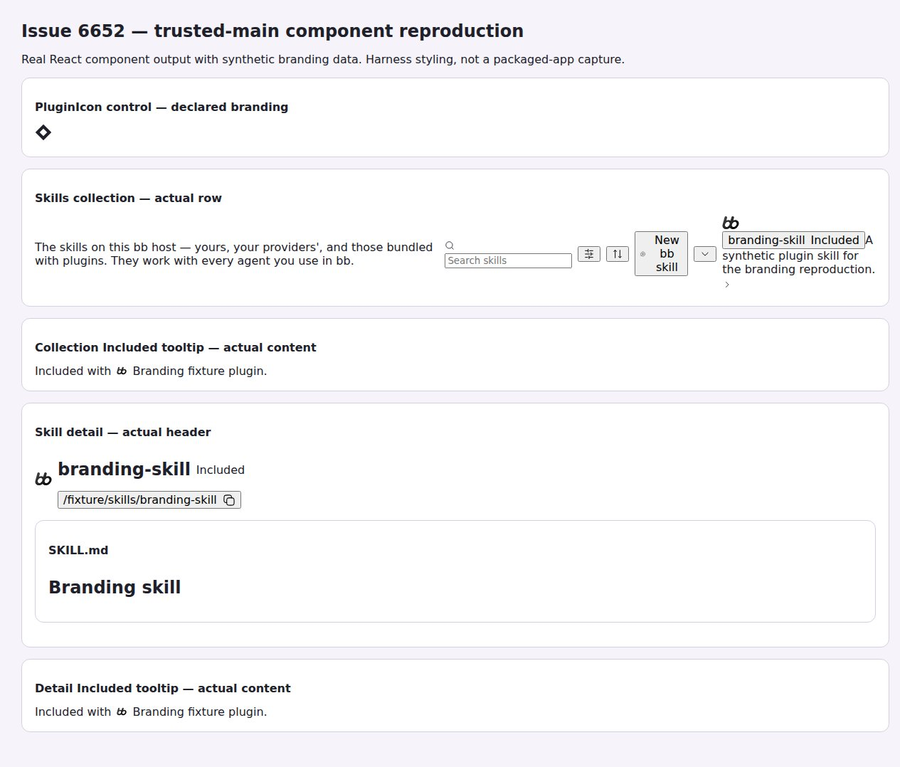
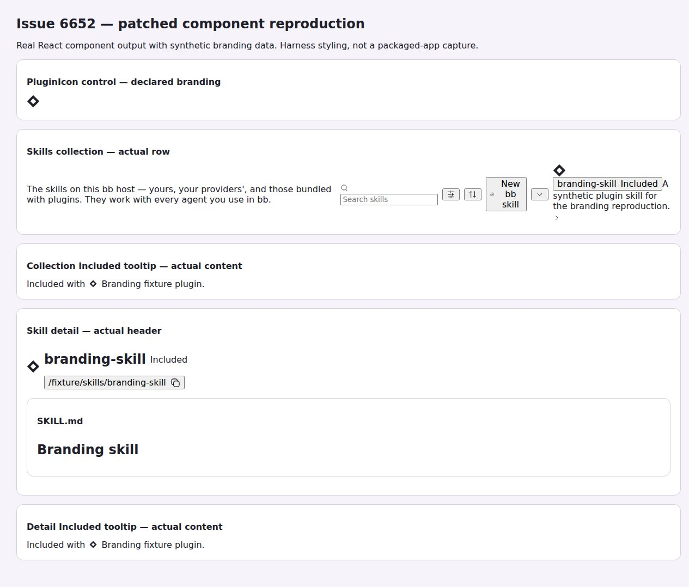

#6652 · Plugin-owned skill icons bypass registered branding
Verdict: REPRODUCED · Root-cause confidence: high · Reproduction label: confirmed-repro
1. TL;DR
Plugin skills can show the bb mark even when their owner has a registered branding icon. The skills collection row, skill detail header, and both Included tooltip contents render the wrong identity. The server correctly identifies a plugin skill with a plugin ID and no provider; the app treats that missing provider as an instruction to render the bb mark and never consults plugin branding. A direct React-component reproduction fails on the recorded main commit in two separate clean checkouts. A small app-only fix resolves branding through the existing plugin icon renderer while retaining bb fallbacks and provider precedence.
2. Claims vs findings
| Claim | Finding | Evidence |
|---|---|---|
| Plugin skills lose their registered icon in the collection. | Verified | The synthetic asset is visible through PluginIcon but absent from SkillsOverview output. |
| The detail header and Included tooltip are affected. | Verified | All four rendered surfaces fail the same asset assertion, including tooltip contents opened with pointerMove. |
| The manifest is necessarily broken. | Refuted as a necessary cause | The same populated branding store renders the expected icon through the existing PluginIcon control. |
| The reported packaged macOS environment behaves the same. | Not directly tested | This investigation used Linux source builds and real React components; no packaged macOS instance or reporter plugin was run. |
3. Environment
- Public repository get-bb/bb, trusted origin/main at
a1bf55b6a04c7948ae5ae0dcfcbdec27d2b507a2. - Linux 4.19.0-gvisor, Node v22.19.0, pnpm 9.15.0, Vitest v4.1.1, jsdom.
- Two new detached worktrees, CHECKOUT_A and CHECKOUT_B, both started clean at the identical commit. Each used its own frozen installation and successful full Turbo build (72 tasks).
- No BB application server, provider session, real user plugin, or user data store was used. Ports and BB data directories: not applicable to this component reproduction.
- Visual evidence: a real headless-browser capture of test-rendered component markup. Harness CSS, normalized local asset URLs, and expanded tooltip-description wrappers are used to make the output readable; this is not a packaged-app screenshot.
4. Minimal reproduction
- Prepare a checkout of trusted main at the recorded commit and build its existing dependencies.
- Save the complete test below at the specified app test path.
- Run the focused Turbo command. No new dependency, plugin installation, or provider authentication is needed.
git clone --branch main https://github.com/get-bb/bb.git bb-repro cd bb-repro git checkout --detach a1bf55b6a04c7948ae5ae0dcfcbdec27d2b507a2 pnpm install --frozen-lockfile --prefer-offline pnpm exec turbo run build build:types --filter=@get-bb/plugin-sdk pnpm exec turbo run build Save the test below as apps/app/src/views/skill-branding.repro.test.tsx. pnpm exec turbo run test --filter=@bb/app -- src/views/skill-branding.repro.test.tsx
Expected: each of the four skill surfaces contains the declared plugin asset, just like the PluginIcon control. Actual on main: each contains BbLogo instead.
FAIL renders the declared plugin asset on all skill surfaces AssertionError: collection must show the plugin asset AssertionError: collection tooltip must show the plugin asset AssertionError: detail must show the plugin asset AssertionError: detail tooltip must show the plugin asset Test Files 1 failed (1) Tests 1 failed (1)
Complete reproduction test, used in both clean checkouts
// @vitest-environment jsdom
import { writeFileSync } from "node:fs";
import { cleanup, fireEvent, render, screen } from "@testing-library/react";
import { renderToStaticMarkup } from "react-dom/server";
import { afterEach, expect, it } from "vitest";
import type { SkillSummary } from "@bb/server-contract";
import { PluginIcon } from "@/components/plugin/PluginIcon";
import { SkillsOverview, SkillDetailDialogView } from "@/components/tools/SkillsCollection";
import { setPluginLogoUrls, resetPluginLogoStoreForTest } from "@/lib/plugin-logos";
afterEach(() => {
cleanup();
resetPluginLogoStoreForTest();
});
it("renders the declared plugin asset on all skill surfaces", async () => {
const iconUrl = "/issues/6652/repro/fixture.svg";
setPluginLogoUrls(new Map([["branding-fixture", {
displayName: "Branding fixture", icon: null, compactIconUrl: iconUrl,
logoUrl: null, logoDarkUrl: null, icons: new Map(),
}]]));
const skill: SkillSummary = {
id: `skill_${"b".repeat(64)}`, name: "branding-skill",
description: "A synthetic plugin skill for the branding reproduction.",
provider: null, scope: "plugin", pluginId: "branding-fixture",
filePath: "/fixture/skills/branding-skill/SKILL.md", manageable: false,
registrySkillId: null,
};
const roster = new Map();
const collection = render(<SkillsOverview skills={[skill]} providerRoster={roster}
isLoading={false} hasError={false} onCreateSkill={() => {}} onSelectSkill={() => {}} />);
const collectionMarkup = collection.container.innerHTML;
fireEvent.pointerMove(screen.getByLabelText("branding-skill is included with Branding fixture (bb plugin)"));
const rowTooltip = (await screen.findByRole("tooltip")).outerHTML;
cleanup();
const detail = render(<SkillDetailDialogView skill={skill} providerRoster={roster}
files={["SKILL.md"]} selectedPath="SKILL.md" onSelectPath={() => {}}
content="# Branding skill" isLoadingContent={false} isContentError={false}
canEdit={false} canDelete={false} canOpenInEditor={false} isDeleting={false}
onEdit={() => {}} onRetry={() => {}} onDelete={() => {}} onOpenInEditor={() => {}} />);
const detailMarkup = detail.container.innerHTML;
fireEvent.pointerMove(screen.getByLabelText("branding-skill is included with Branding fixture (bb plugin)"));
const detailTooltip = (await screen.findByRole("tooltip")).outerHTML;
const control = renderToStaticMarkup(<PluginIcon pluginId="branding-fixture" icon={null} className="size-6" />);
const output = process.env.BB_REPRO_HTML;
if (output) {
const panels = [
["PluginIcon control — declared branding", control],
["Skills collection — actual row", collectionMarkup],
["Collection Included tooltip — actual content", rowTooltip],
["Skill detail — actual header", detailMarkup],
["Detail Included tooltip — actual content", detailTooltip],
].map(([heading, markup]) => `<section><h2>${heading}</h2>${markup}</section>`).join("");
writeFileSync(output, `<!doctype html><html><head><meta charset="utf-8"><title>Issue 6652 component reproduction</title>
<style>body{font:16px system-ui;margin:30px;color:#20202a;background:#f6f4fa}section{padding:18px;margin:16px 0;border:1px solid #d4cfe1;border-radius:12px;background:white}h1{font-size:24px}h2{font-size:16px}button{font:inherit}img{width:24px;height:24px}.size-6{width:24px;height:24px}.size-3\\.5{width:14px;height:14px}.size-4{width:16px;height:16px}.inline-block{display:inline-block}.flex,.inline-flex{display:flex;align-items:center;gap:8px}svg{width:18px;height:18px}[role=tooltip]{position:static!important;transform:none!important;background:#eee9fa;padding:10px}span[style*=clip]{display:none}article{max-width:800px}</style></head><body>
<h1>Issue 6652 — trusted-main component reproduction</h1><p>Real React component output with synthetic branding data. Harness styling, not a packaged-app capture.</p>${panels}</body></html>`);
}
for (const [surface, markup] of [
["collection", collectionMarkup], ["collection tooltip", rowTooltip],
["detail", detailMarkup], ["detail tooltip", detailTooltip],
]) {
expect.soft(markup, `${surface} must show the plugin asset`).toContain(`data-plugin-icon-asset="${iconUrl}"`);
}
});

5. Root cause
The server's plugin skill listing produces a legitimate identity:
provider: null, scope: "plugin", pluginId: provenance.pluginId,
SkillLeading and SkillProvenanceTooltip choose the icon using only the provider. The former falls through to <BbLogo className="size-6" /> when the provider is null; the latter explicitly selects BbLogo for that null-provider branch. The detail header reuses SkillLeading, and both Included pills use the tooltip component. Thus one identity-selection mistake propagates to all affected surfaces.
usePluginCompactBranding already exposes the registered icon and compact asset URL, and PluginIcon already knows how to render both. The reproduction populates this same store and renders PluginIcon as a positive control; missing server data or an unavailable renderer is not needed to explain the failure. No protocol or stored-data change is warranted.
6. Fix proposal and validation
For a plugin-scoped skill without a provider, resolve the plugin ID through existing branding and PluginIcon. Use the same selection for the row, detail header, and Included tooltip. Preserve provider icons, the bb mark when branding is absent or not loaded, and the original light/dark tooltip fallback classes. Do not reinterpret plugin skills as provider skills or change their server identity.
The local fix changes two existing app files, 114 total text lines (113 additions and one deletion). Its table-driven regression covers collection and detail surfaces, including their opened tooltip contents, for compact asset branding, built-in glyph branding, missing branding, and unloaded plugins. On unchanged main, four branded cases fail and four fallback cases pass. After the fix, all eight cases pass. The relevant existing suites plus the standalone report reproduction pass (51 tests); the committed regression and existing suites alone pass 50 tests. App typecheck, lint (zero errors; existing warnings), production build, formatting, and git diff --check pass. No binary, dependency, generated, protocol, database, packaging, or release changes are included.

7. Linked PR review
PR #6653 is closed and unmerged. Its metadata and diff were read as untrusted data only; its branch and tests were not checked out or executed. Static inspection shows that it targets the same two presentation paths and uses the existing plugin branding store. This is consistent with the independently reproduced root cause, but is not a runtime validation of that PR. No open PR linking #6652 was present during the duplicate check.
8. Verification in a second clean checkout
The same agent repeated the investigation, not an independent agent review. CHECKOUT_B was created detached at the full trusted base commit, with a fresh frozen dependency install and full successful Turbo build, before applying only the agent-authored test changes. The production files remained unchanged. The standalone reproduction again failed with all four missing-asset assertions. A corrected supported built-in glyph fixture also reproduced the four branded regression failures while all four fallback cases passed. No report conclusion was weakened by the second run.
CHECKOUT_B: pnpm exec turbo run test --filter=@bb/app -- src/views/skill-branding.repro.test.tsx Test Files 1 failed (1) Tests 1 failed (1) pnpm exec turbo run test --filter=@bb/app -- src/views/SkillsView.test.tsx -t 'plugin skill branding' Tests 4 failed | 4 passed | 34 skipped (42)
9. Related issues and limits
A repository search for branding and skills found only this issue. The source-level result is conclusive for the icon selection code but does not establish a successful plugin install, manifest asset serving, or visual styling in a packaged macOS app. The broader Skills discovery/precedence live-instance verification recipe was not run; this focused change is covered at its actual React owner boundary. The verification-map inventory check reports a pre-existing unmapped diagnostics CLI family; no unrelated inventory repair is included.
10. Appendix
Source checks and focused post-fix commands:
pnpm exec turbo run test --filter=@bb/app -- src/views/SkillsView.test.tsx src/components/plugin/PluginIcon.test.tsx pnpm exec turbo run typecheck lint --filter=@bb/app pnpm exec turbo run build --filter=@bb/app pnpm exec oxfmt --check apps/app/src/components/tools/SkillsCollection.tsx apps/app/src/views/SkillsView.test.tsx git diff --check git diff --numstat origin/main
The first all-package build needed a separate SDK build before plugin builds could resolve existing SDK entry points; rerunning after that preparation succeeded in both clean checkouts. Issue and linked-PR text were treated only as claims and untrusted data. No issue-supplied command, script, patch, branch, test, binary, or external URL was executed or fetched. Raw logs, test artifacts, and scratch checkouts remain outside the published report files.
Agent generated · 2026-10-30